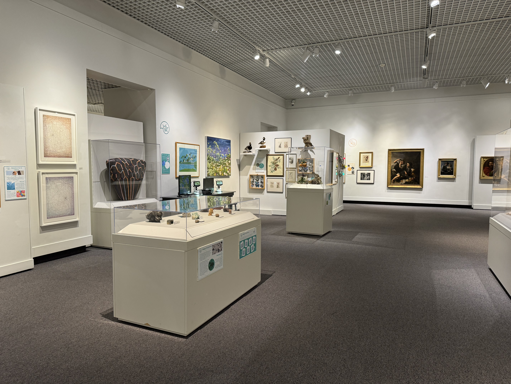
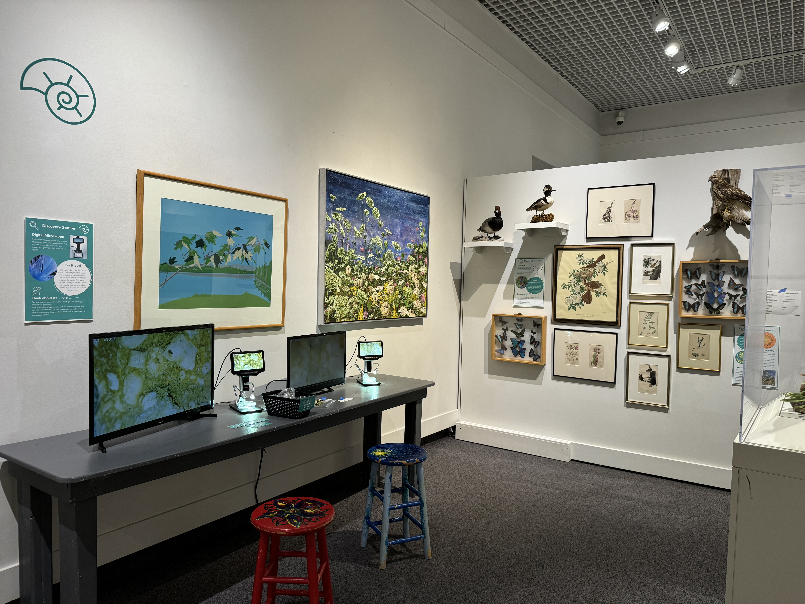

Discovery House
Planning a Space
for the Future
Central to the institutional vision was the renovation and reimagining of Discovery House — the museum's primary interactive learning space and the anchor for its STEAM education programming.
Planning began with understanding how the space was being used, how it could be transformed, and how it could become a model for the kind of cross-disciplinary, community-centered experience that the museum was becoming.
01
Reporting Structure
Clear lines of authority from frontline staff through department heads to the Executive Director, aligned with programmatic and operational priorities.
02
Job Descriptions
Comprehensive role definitions for every position in the organization — education, collections, operations, visitor experience, and development.
03
Time Clock & Accountability
Modernized payroll and time-tracking systems, performance evaluation protocols, and onboarding standards.
04
Strategic Alignment
Ensured every organizational element — staffing, space, programming — mapped to the museum's long-term community and institutional goals.